Quick tour¶
A two-minute look at the Kite interface, so you know where everything lives. Don't worry about the details here — each area has its own guide; this is just the map of the cockpit.
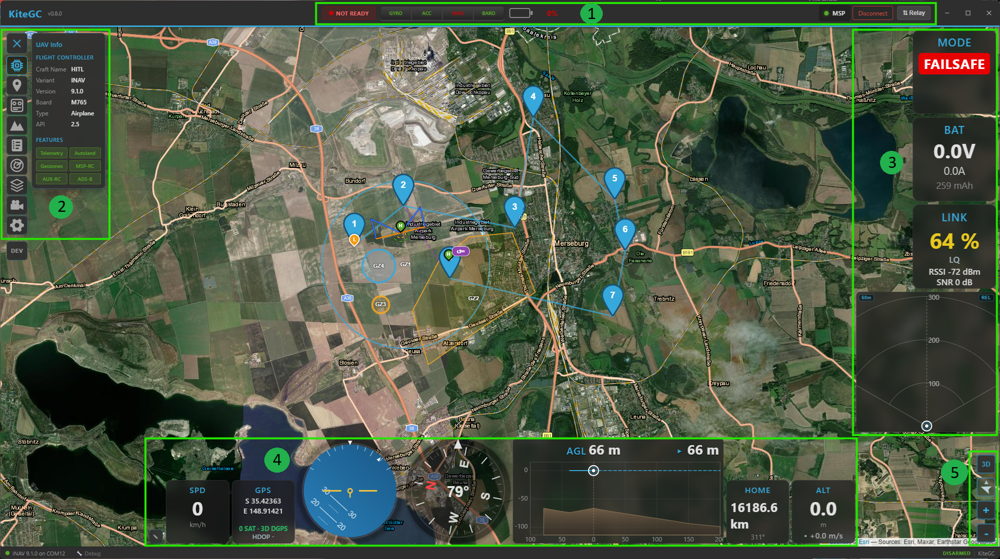
The main interface, with the numbered regions described below.
The layout at a glance¶
The window is built from a few fixed regions around a full-screen map:
| # | Region | What it's for |
|---|---|---|
| 1 | Top bar | Connecting, plus aircraft / sensor / battery status |
| 2 | Navigation rail & panel | The tool rail (left edge) and the panel it opens |
| 3 | Right widget dock | Flight instruments down the side |
| 4 | Bottom widget dock | Flight instruments along the bottom |
| 5 | Map controls | Switch 2D/3D, follow mode, zoom |
| — | Map | Fills the background: your aircraft, track, home and mission |
| — | Status bar | The thin strip at the very bottom: connection & arming state |
1 · Top bar¶
The command centre. From left to right:
- Brand & version — the Kite logo and the running version.
- Aircraft status (centre) — the arming indicator, a row of sensor-health tiles (gyro, acc, mag, baro, GPS, and rangefinder/airspeed when fitted — green = OK, amber = warning, red = fault), and the battery readout. Tiles only appear for sensors your craft actually reports, so the row adapts to the airframe.
- Connection controls (right) — protocol, transport and port while disconnected; once connected they're replaced by the live link status and a Disconnect button. See the Connecting guide.
- ⇅ Relay — opens the telemetry relay/forwarding dropdown.
- Window controls — minimise / maximise / close.
2 · Navigation rail & panels¶
The strip down the left edge is the navigation rail. Click an icon to open its panel. Click the same icon again to park the panel: it slides out to the left and the map gets the whole screen, but nothing is lost — a mission you are editing stays in edit mode, a half-filled form keeps its values, and the next click brings the panel straight back (the icon shows a dashed frame while it is parked). Switching to another tool or closing the rail with its toggle closes the panel for real. Only one panel is open at a time, and the map stays live behind it. Some tools appear only when relevant (e.g. Control only on an ArduPilot/PX4 link), so the rail stays uncluttered.
Each tool, at a glance — expand for a quick description and the link to its full guide:
UAV Info
Flight-controller identity (firmware variant, version, board) and live vehicle status — a quick read-out of what you're connected to and how it's doing.
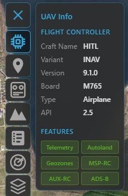
Details: Telemetry & display.
Mission
Plan a waypoint mission: add, edit and reorder waypoints, set altitudes (incl. AGL / terrain-following), generate survey patterns, undo/redo, and upload / download to the aircraft. Includes the reusable mission library.
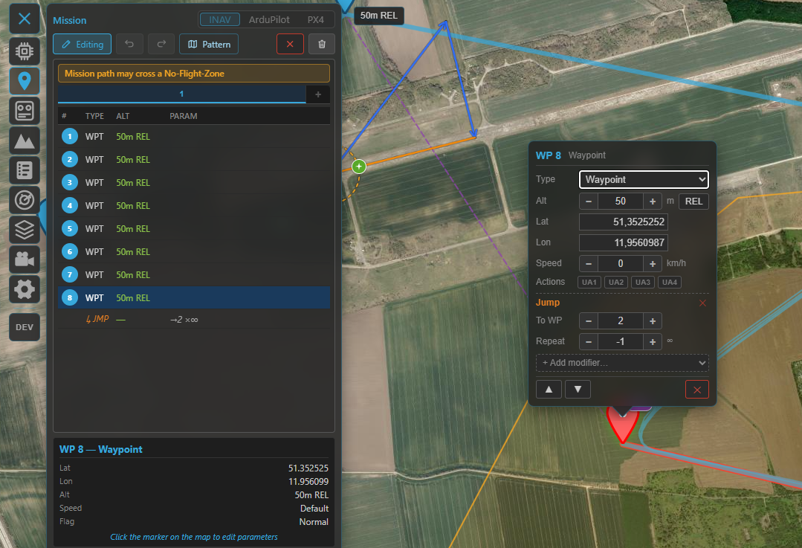
Details: Missions.
Control (ArduPilot / PX4)
Send vehicle commands over MAVLink — arm / disarm, change flight mode, take off, RTL, loiter and more. Only shown when connected to an ArduPilot or PX4 vehicle.
RC
Fly from the GCS with a gamepad or joystick: map your controller's axes/buttons to RC channels and manage control profiles. Only shown when RC control is enabled (and not on a passive telemetry link).
Details: RC control.
Terrain
A terrain-profile analysis of your planned mission or a recorded track — see the ground elevation beneath the route and check your above-ground clearance.
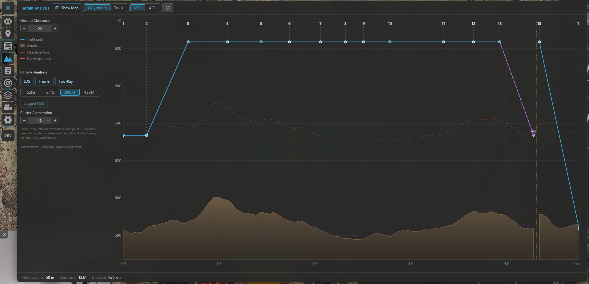
Details: Missions.
Logbook
Your flight history: automatic recordings with replay, plus import of INAV blackbox, ArduPilot
Dataflash, MAVLink .tlog and MWPTools raw-MSP logs. Add notes and weather, and reach the Vehicle
and Battery managers from here.
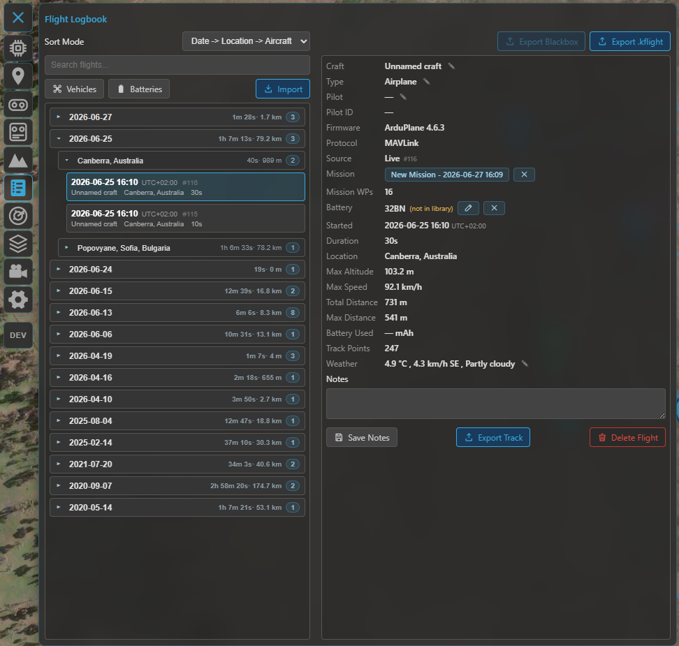
Radar
Foreign-vehicle radar — show nearby ADS-B (and other) traffic on the map, with proximity and conflict alerts. Only shown when radar is switched on.
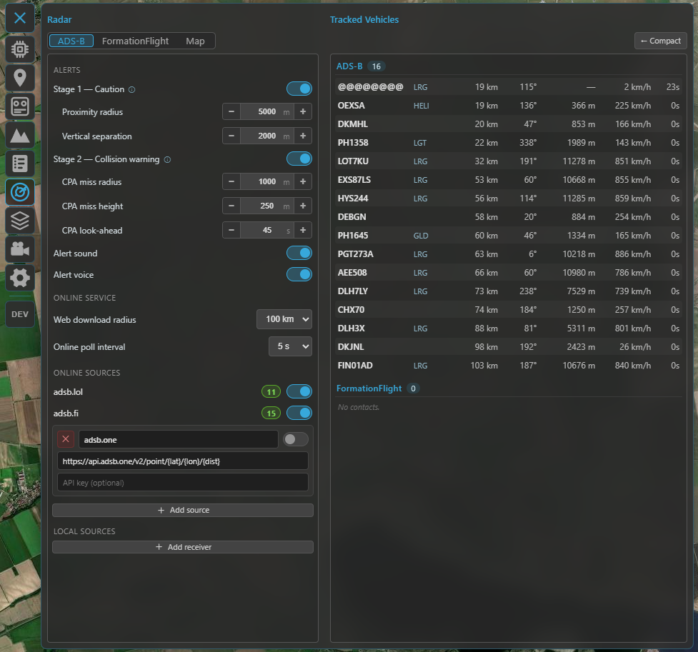
Details: Radar & ADS-B.
Airspace
Aeronautical overlays (airports, controlled airspace and obstacles), plus the editors for INAV geozones and ArduPilot/PX4 geofences. Shown when the overlay is on, or when a connected FC supports geozones/geofences.
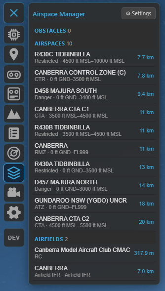
Details: Safety.
Video
Set up and watch a live RTSP video feed alongside (or behind) the map, with one-click map ⇄ video swapping.
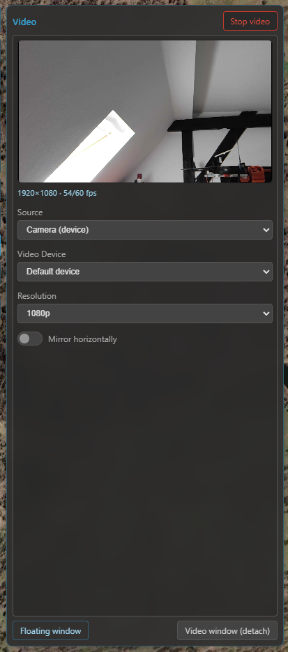
Details: Video.
Settings
Everything configurable — units, map provider, telemetry rates, flight logging, language, widget selection and more.
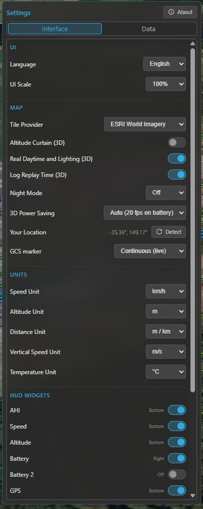
Details: Settings reference.
3 & 4 · Widget docks¶
Two docks hold your flight widgets (attitude, altitude, speed, compass, and more): the right dock (3) down the side, and the bottom dock (4) along the bottom.
Click the ✎ (edit) button by a dock to enter edit mode, then drag widgets to rearrange them or move them between docks. In edit mode every widget also shows a resize button in its corner: each tap steps it to its next size — square widgets toggle between small and large, the wide ones (Live AGL, Video) go wide → large square → small square. The aspect ratio never changes, and a dock shrinks to its largest widget. Choose which widgets appear in Settings → Interface. Widgets scale to fit the dock, and your layout (which dock each sits in and its size) is remembered between sessions. Every widget follows your global units and works the same live and in replay.
Each widget, at a glance — expand for what it shows and how it works:
AHI — Artificial Horizon
A circular attitude indicator: the horizon line moves with pitch and banks with roll around a fixed aircraft symbol. A flight-path-vector marker shows where the aircraft is actually going — offset from the symbol by angle of attack (vertically) and crab (laterally) — smoothed so it reads cleanly.
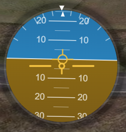
Speed
The big number is airspeed when the aircraft reports it (what matters in flight), with ground speed on a second line; without an airspeed sensor, ground speed is the primary number. A throttle bar (0–100 %, from the FC) sits on the left and a derived acceleration bar on the right (±4 m/s², estimated from the speed trend — no number, just a bipolar bar from centre).
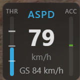
Altitude
The aircraft's altitude (barometric / navigation, relative to home), switching to km above 999 m to stay compact. Below it, a vario read-out with an ▲ / ▼ trend arrow and colour for climb / sink.
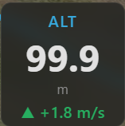
Battery
A charge bar (the FC's battery percentage, shown when the FC reports one) plus voltage, current, power (V × A) and charge drawn (mAh). On multi-battery ArduPilot / PX4 aircraft it shows one pack with an AUTO selector that follows the highest-draw pack (with a short hysteresis so it doesn't flicker), a low-battery safety override (jumps to the lowest pack once one drops below the Battery alert threshold), and manual pinning (click the BAT label to cycle AUTO → pack 1 → pack 2 → …). Single-battery setups (INAV) just show the one pack. The charge figure is the FC's percentage when available, otherwise the voltage (no guessed % from voltage). Add a second Battery 2 widget to watch two packs at once (e.g. a QuadPlane's forward and lift packs). See Batteries.
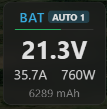
GPS
Latitude / longitude, satellite count, fix type (No fix / 2D / 3D / 3D DGPS, colour-coded) and HDOP.
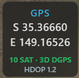
RC Link
An adaptive radio-link read-out — it shows whatever the active protocol provides and hides the rest: LQ (link quality), RSSI (in % and dBm) and SNR. What you get depends on the link: CRSF, SmartPort and INAV 9.1+ give the full set (LQ + RSSI %/dBm + SNR), while MAVLink (ArduPilot / PX4), LTM and INAV before 9.1 report RSSI only — so that's all the widget shows there. The primary value is colour-coded green / amber / red by strength.
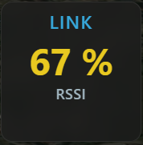
Compass
A rotating compass rose with the heading at the centre and a fixed top pointer. While moving, an amber course-over-ground bug rides the rim — the gap between it and the nose is your crab angle — and the COG value is read out above the heading. When the aircraft reports wind, a blue wind arrow (pointing downwind) and the wind speed appear.
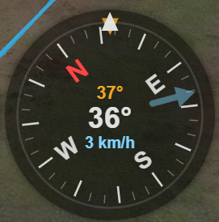
Home
A large arrow pointing to the home / launch point relative to the aircraft's heading, with the distance and bearing to home. Appears once the flight controller has set home.
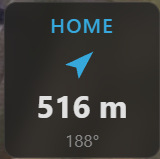
Flight Mode
The current flight mode as a badge. Kite maps every stack's modes onto one protocol-agnostic model, so INAV, ArduPilot and PX4 read consistently: the exact mode name is always kept (e.g. Angle, Cruise, RTL, FBW-A, QLoiter), while the badge colour comes from the mode's category — the same colour scheme used to colour the flight track on the map. Roughly: stabilized = green, altitude-hold = yellow, position-hold = teal, cruise = orange, mission = blue, guided = blue, RTH / return = violet, launch / takeoff = magenta, land = orange, failsafe = red, manual = grey, acro = light grey.
INAV's (and PX4's) main mode + sub-modes are shown together: the primary mode is the badge, and any active modifiers (AltHold, Heading, HeadFree, Soaring, Autoland, …) appear as small chips beside it. During a mission the badge also shows the FC's current target as WP N/X.
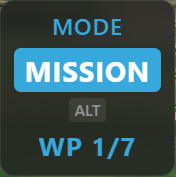
Live AGL
A forward-looking terrain-profile HUD (a wide widget). The left third shows the terrain you've flown over with the aircraft riding at its current height; the right two-thirds shows the estimated terrain ahead along your heading, with a dashed projected flight line so you can see a climb, descent or ground intersection coming. Centre read-outs give AGL and minimum clearance ahead (red when it goes negative). Works live and in replay.
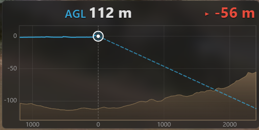
Terrain Radar
A top-down, track-up terrain-awareness display in the style of an airliner's EGPWS: a forward fan coloured by clearance against your altitude (red = at/above you → green = well below). Two independent ranges — the fan distance scales with speed, and a separate clearance colour scale (60 / 120 / 250 m, left button). A REL / PRED button (right) switches the reference between your current altitude and a sink-rate-predicted one. Both buttons appear only while the dock is in edit mode (✎), so they don't clutter the display in flight.
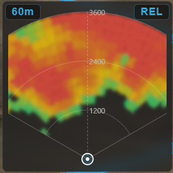
Video
A live video feed embedded as a widget — an RTSP stream or a local capture device / camera (e.g. a USB capture card), sized to the stream's aspect ratio. Double-click it to swap the feed with the map. See Video.
5 · Map & its controls¶
The map fills the whole background and is always interactive — pan and zoom around it even with a panel open. A small cluster of buttons sits in one corner of the map (5):
- 2D / 3D — switch between the flat moving map and the full 3D globe. (The button shows the mode you'll switch to.)
- Follow mode — cycles Free → Follow → Heading-up: free panning, keep the aircraft centred, or centre and rotate the map to the aircraft's heading.
- Zoom + / − — zoom the map (the mouse wheel works too).
The 3D view has more of its own controls — see the 3D map guide.
Status bar¶
The thin strip along the very bottom:
- Left — a connection dot (green = connected, red = not) and, once connected, the firmware variant, version and port (e.g. INAV 8.0.0 on COM7).
- Right — the arming state (ARMED / DISARMED) while connected.
Kite on a phone¶
On a phone (Android or iPhone) Kite uses its own landscape layout, built for a screen that has room for either the map or a widget, rarely both. Tablets keep the desktop layout described above.
- No top bar, no status bar, no bottom dock. The map fills the whole screen; the navigation rail's ☰ button sits in the top-left corner. The arming state sits in the bottom-left corner, with a sensor warning chip next to it that only appears while a sensor is amber or red.
- Connecting happens in a pop-out: tap the 🔗 chain-link button at the top-right of the map for protocol and transport on the first row, the port / host / device on the second, Connect — and Relay, which extends the pop-out with the relay entries. Tap anywhere else to close it.
- Widgets live in a frosted-glass column on the right edge, on a grid of 4 rows and up to 2 columns, with two pages — swipe up or down to switch. The map runs on underneath the glass. A small widget takes one cell, a large one 2 × 2, the wide Live AGL 2 × 1; the column narrows to one cell when only small widgets are active. Widgets that no longer fit are switched off automatically, and Settings → HUD widgets tells you when the grid is full.
- Rearranging widgets: long-press a widget to enter edit mode. Hold a widget briefly and drag it to move it — the others shift live to show where they will settle; a quick flick still turns the page. Tap the corner button to step through the sizes. Tap the map to leave edit mode.
- Map controls: pinch to zoom (no zoom buttons); the 2D / 3D and follow buttons sit at the bottom-right of the map, next to the widget column. The map credits follow the arming chip along the bottom edge.
- Panels and the replay player get the room they need: the wider panels (logbook, missions and the like) may extend over the widget column to the right screen edge, and when the replay player's full controls are showing on a narrow phone, the widget column slides aside until playback runs and the player folds into its compact strip.
- Video has no floating window on the phone. Once a source runs (Video panel → Start), a camera button appears above the map buttons: it slides a docked video window into the bottom-right corner of the map, and slides it out again — behind the widget column and off the screen — so the picture is one tap away and never in the way. Double-tap the window to swap video and map: the video fills the map area and the small window holds a plain follow map (2D, heading-up, no panning). In that mode the button turns into a map button in the bottom-right corner that hides and shows the small map; double-tap the full-screen video to bring the map back. The video widget works as on the desktop (double-tap swaps there too); while it is active, the docked window and its button stay hidden. Whatever is off-screen — a parked window, a widget on the other page — is not rendered, but the stream keeps running, so it is back instantly.
- Not on the phone: the video preview inside the Video panel, the raw-telemetry popup, and the stick overlay beside the replay player.
Where to go next¶
- Get linked up: Connecting.
- Make sense of the instruments: Telemetry & display.
- Plan a flight: Missions.